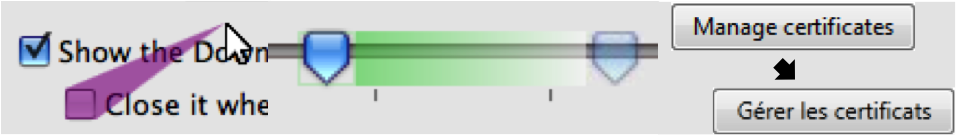

Prefab: The Pixel-Based Reverse Engineering Toolkit
Here's a video of our original Prefab work.
Here's a video of our work from CHI 2011. Prefab can be used to reverse engineer interface hierarchy (like a DOM for a web page) and content (like text).
Here's a video of our target-aware pointing work. We present a general-purpose implementation of a target-aware pointing technique, functional across an entire desktop and independent of application implementations. Specifically, we implement the Bubble Cursor, the fastest general pointing facilitation technique in the literature. Our implementation obtains the necessary knowledge of interface targets using a combination of pixel-level analysis and social annotation.
Here's a video of our latest work. We developed new methods for Prefab, and we used them to explore Moscovich et al.'s Sliding Widgets in real-world interfaces. Specifically, we overlayed Sliding Widgets throughout Microsoft Windows 8, replacing the existing widgets to improve interaction with hybrid touch-and-mouse devices. These devices, like the Microsoft Surface and the Lenovo Yoga, include a touchscreen and a trackpad, but they're awkward to use. This work lets any developer, even outside of Microsoft, improve these devices without too much work.